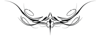

FAUST - I

İTHAF1
1 Okura ithaf olunan bu bölüm, Faust efsanesindeki görüntülere hitap etmektedir.
Yaklaşmaktasınız yeniden, kararsız görüntüler,2
2 Yazarın hayâl gücünde henüz kesin biçim kazanmamış görüntüler.
Gençlik yıllarımda, bulanık3 gözlerime gözüken.
3 Genç Goethe’nin bakışları bulanıktır çünkü bu görüntülerin anlamını henüz çözememiştir.
Denesem mi acaba bu kez tutmayı sizi?
Kalbim o rüyaya4 hâlâ meyilli mi?
4 Şairin hayâl gücünün ürünü.
Israrlısınız! Pekâlâ, siz yönetin şimdi öyleyse,
Siz ki yükseliyorsunuz dumanlar ve sisler arasından çevremde;
Yüreğim gençlik heyecanı ile sarsılıyor,
Sizi saran büyülü nefesle doluyor.
Getiriyorsunuz beraberinizde mutlu günlerin görünümlerini,
Ve kimi sevgili gölgeler5 yükseliyor;
5 Bu gölgeler, Goethe’nin Faust’u ilk yazmaya başladığı dönemlerdeki kişilerdir. Babası, kız kardeşi Cornelia, Susanna von Klettenberg, Merck ve Lenz gibi.
Eski, yarı unutulmuş bir efsane gibi
İlk aşk ve ilk dostluk6 canlanıyor;
6 Frankfurt’daki Grete’cik, Sesenheim’daki Friederike Brion, Lotte Buff, Lili Schönemann, Behrisch, Herder, Klinger, Klopstock.
Acılar tazeleniyor, yaşam tekrarlıyor
Dolambaçlı, şaşkın yolunu
Ve anıyor o güzel insanları, mutlu anlar uğruna
Talihin yanılttığı, benden önce yok olanları.
Gelecekteki şarkılarımı duymayacak,
İlk şarkılarımı söylediğim canlar,
Yok olup gitti o sevimli kalabalık,
Ah! Söndü o ilk yankılar ne yazık!
Kederim şimdi yabancı kulaklarda çınlıyor,
Alkışları bile yüreğimi burkuyor,
Ve şarkılarımdan hoşlananlar başkaları da,
Yaşıyorlarsa hâlâ, şaşkın gibi gezinip dururlar dünyada.
Ve kavrıyor beni çoktan unuttuğum bir özlem,
O sessiz, vakur ruhlar âlemine götüren,
Şimdi artık belirsiz seslerle çınlıyor
Fısıldadığım7 şarkım, rüzgârla tınlayan bir arp gibi.
7 Öteki dünyaya özleminden dolayı yazar şarkısını huşu içinde ancak fısıldayarak söyleyebilmektedir.
Bir ürperti kaplıyor içimi, gözyaşı hep gözyaşı,
Yumu şuyor katı yürek8, hafifliyor;
8 Yaşadığı çağdaki durumları beğenmeyen yaşlı Goethe’nin kalbi, geçmişteki anılarla tekrar yumuşuyor.
Sahip olduğum ne varsa, sanki uzaklarda,
Ve as ıl gerçeğimi9 yitirilen oluşturmakta.
9 İlk çalışmalarını sevgiyle izleyenlerin gözünde tekrar canlanmaları ile birlikte yazarın ruhundan neredeyse silinmiş olan “Faust”daki görüntüler de şekilleniyor ve onu eserini bitirecek kıvama getiriyor.
TİYATRODA ÖN GÖSTERİ10
10 Goethe, bu bölümde Hintli yazar Kalidasa’nın Sakuntala adlı dramını örnek alarak yola çıkmıştır. Sakuntala’da önce bir brahmanın hayır duası, sonra müdür ile bir aktris arasındaki diyalog yer alır. Oynanacak piyesin adı anılır ve seyircilerin beğenisi kazanılmaya çalışılır.
(Müdür, Tiyatro Yazarı, Soytarı)11
11 Gezici tiyatro kumpanyalarında muhakkak halkı kaba saba şakalarıyla eğlendiren bir soytarı bulunurdu.
MÜDÜR
Siz çok kez bana
Zor ve sıkıntılı anlarımda yardım ettiniz,
Söyleyin, Alman diyarlarındaki
Girişimlerimizden ne beklersiniz?
Çok isterdim eğlendirmek bu kalabalığı,
Yaşadığı ve özellikle de yaşattığından12 dolayı,
12 Hayatın tadını çıkartmak isteyen halk, tiyatroya gelerek müdürün de para kazanmasını sağlamaktadır.
Tahtalar çakıldı, direkler dikildi,
Ve herkes eğlence bekliyor.
Kaşlar kalkmış13 oturmuş yerine,
13 Kaşların kalkması, seyircilerin eleştiriye hazır olduğunu gösteriyor.
Sakin bekliyor ve hayret içinde seyretmek istiyor.
Bilirim ben girmeyi halkın gönlüne;
Ama kalmamıştım asla böyle zor bir durumda;
Gerçi alışık değiller böylesine iyi eserlere,
Fakat şurası kesin, hepsi okumuş oldukça.
Ne yapmalı ki, her şey yeni ve ilginç
Ve beğenecekleri, anlamlı bir oyun olmalı?
Görmek isterim kalabalığı elbette,
Sel gibi çadır tiyatromuza akan
Ve güçlü, yinelenen sancılarla
Dar kapıdan14 girmeye çalışan,
14 Dar kapı: Cennete götüren dar “merhamet kapısı” ile ironik bir karşılaştırma. (Bkz. Matt.7,13: “Dar kapıdan geçeceksiniz”)
Gündüz vakti, saatler henüz dördü göstermeden,
Bilet almak için mücadele veren,
Sanki kıtlıkta fırının kapısında ekmek bekleyen,
Tek bir bilet için birbirini çiğneyen.
Bu mucize her tür insanı etkiler,
Yazardır ancak bu etkiyi yaratacak:
Dostum, gerçekleştir hemen bunu!
YAZAR
Aman o karman çorman topluluktan bahsetme,15
15 Yazar burada tekrar kalabalık halk kitleleri karşısında duyduğu hoşnutsuzluğu belirtir. Küçük bir arkadaş çevresinde yaratıcılığının daha verimli olacağını düşünmektedir.
Her gördüğümde kaçıyor ilham perilerim!
Çalkantılı kalabalığı bana gösterme,
İstemesek de bizi girdaba sürüklüyor!
Hayır, götür beni sakin göklere,
Sadece yazar için yeşeren o katıksız coşkuya,
Aşk ve dostluğun yüreğimizdeki nimeti
Tanrıların elleriyle yaratıp beslediği yere!
Ah! Yüreğimizin derininden doğanı,
Dudakların çekingen mırıldandığını,
Başaramadım henüz, belki bu kez başarırım derken
Yutuverir onu vahşi anın baskısı.16
16 Goethe’nin Iphigenie, Tasso dramları ve ilmi yazıları ancak yıllar sonra takdir edilmiştir. Hattâ, 1790 yılında yazdığı Faust fragmanı için bir yayımcı bulmakta bile zorlanmıştır.
Çoğu zaman, ancak yılları aştıktan sonra,
Kusursuz şekliyle ortaya çıkar.
Parıldayan şey, bir anlıktır sadece,
Gerçek olan uzanır gelecek nesillere.
SOYTARI
Duymasaydım gelecek nesiller sözünü keşke!
Diyelim ki, getirdim gelecek nesilleri gündeme,
O zaman kim eğlendirecek şimdiki nesli?
Eğlencedir çünkü istediği ve buna kavuşmalı!
Çalışkan bir delikanlının varlığı,
Sanırdım ki, küçümsenmez hiçbir zaman.
Kendini rahatça ifade edebilen,
Çekinmez halkın kaprislerinden;
Kalabalık bir topluluk ister,
Sarsmak için onu en derinden.
Öyleyse çalışın ve halka örnek olun,
Bırakın, coştursun hayâlgücü tüm sesleriyle,
Mantık, anlayış, duygu ve tutkuyu,
Ama dikkat edin! Şarlatanlığı unutmasın!
MÜDÜR
Özellikle çok olay katın oyuna!
Herkes seyretmeye geliyor, çok şey görmek ister.
Gözleri önünden bir sürü olay geçer,
Şaşkınlıktan gözleri açılırsa seyircinin,
O zaman kazandınız işte her cephede,
Çok sevilen bir kişi olursunuz halkın gözünde.
Kalabalığı ancak bol etkinlikle kazanabilirsiniz,
Herkes sonunda kendine göre bir şey bulup çıkartır.
Bol çeşit sunan, elbette birilerine bir şeyler verecektir,
Ve herkes mutlu ayrılır tiyatromuzdan.
Bir oyun mu koyacaksınız sahneye, parçalara bölün onu!
Becerebilmelisiniz böyle bir etli yemeği;
Düşünüldüğünde kolaydır bu.
Siz oyunu bütün sunsanız da ne işe yarar?
Seyirci onu nasıl olsa didik didik parçalar.
YAZAR
Hissetmiyorsunuz bu işin ne kadar kötü olduğunu,
Gerçek sanatçıya asla yakışmayacağını!
O soylu bayların saçmalıkları
Görüyorum, ilkeniz olmuş bile sizin.
MÜDÜR
Böylesine bir eleştiri incitmez beni:
Derinden etkilemeyi düşünen kişi,
En uygun aracı kullanmalı.
Düşünün ki, yumuşak tahtaya saplıyorsunuz baltayı17
17 Yumuşak odunun ağır baltayla kesilmemesi gerektiği gibi, geniş kitleler içinde yüksek sanat şart değildir.
Kimin için yazdığınızı düşünün öncelikle!
Can sıkıntısıdır sürükleyen kimini bize,
Tıka basa doyduğu sofradan kalkar gelir bir diğeri,
En beteri bence,
Okuduktan sonra gelir, akşam gazetesini.
Maskeli baloya gider gibi dalgın bize koşar,
Ve yalnız meraktır her adımı kanatlandıran;
Kendilerini ve kıyafetlerini göstermek isteyen hanımlar
Para istemeden oyuna katılırlar.18
18 Giyimleriyle dikkati çeken güzel kadınlar, belirli bir seyirci topluluğunu tiyatroya çektikleri için, onlar da oyuncular gibi fakat ücret almaksızın oyununbaşarısına katkıda bulunmaktadırlar.
Siz ozan, ne düşler kuruyorsunuz yükseklerde?
Neden sevindiriyor dolu bir tiyatro sizi?
Yakından bakın velinimetlerinize.
Yarısı ilgisiz, yarısı odun gibi.
Bazısı oyundan sonra kumara koşar,
Bazısı da bir fahişenin koynunda çılgın bir gecenin peşinde!
Neden eziyet edersiniz, siz zavallı çılgınlar
böyle bir niyet için şirin ilham perilerine!
Size söylüyorum: Çok, olabildiğince çok şey gösteriniz,
Yanılmazsınız hedefinizde o zaman asla.
Şaşırtmaya çalışın insanları yalnızca,
Güçtür onları tatmin etmek!—
Ne etkiler sizi? Zevk mi acı mı?
YAZAR
Sen git de kendine başka bir uşak ara!
Yazar, kendine bahşedilen en yüce hakkı,
Doğanın verdiği insanlık hakkını,
Senin yüzünden mi alçakça harcayacak!
Tüm gönülleri nasıl coşturacak?
Nasıl galip gelecek tüm unsurlara?
Uyum değil mi göğsünden kopan
Ve dünyayı yeniden yüreğine dolduran?
Doğa sonsuz ipini,
Kaygısızca büküp mekiğe dolarken,
Tüm varlığın uyumsuz yığını
Keyifsiz karmaşık sesler çıkarırken:
Kimdir, sürekli tekdüze akan safları
Canlandırarak ayıran, ahenkle kıpırdatan?
Kimdir peki teker teker çağıran evrensel törene
Olağanüstü seslerin duyulduğu o yere?
Kimdir fırtınayı tutkuyla kızıştıran?
Akşam kızıllığını gerçekten tutuşturan?
Ya ilkbaharın tüm güzel çiçeklerini
Sevgilinin yollarına döken kim?
Kim örer rastgele yeşil yapraklardan
Her tür yararlılığın şeref tacını?
Kimdir Olimpus’a19 ulaştıran? Tanrıları birleştiren?
19 Grek tanrılarının yaşadığı dağ Olympos’a, yani uyuma ancak yazar götürebilir insanları.
Şairde belirir insanın gücü!
SOYTARI
Peki öyleyse, kullanın o güzel güçleri,
Ve soyunun yazarlığa,
Bir aşk serüveni yaşarmış gibi:
İki insan tesadüfen birbirine yaklaşır, hisseder ve orada kalır,
Ve giderek birbirine bağlanır;
Mutluluk önce artar, sonra saldırılar başlar,
Hayranlığın ardından acılar yaklaşır,
Ve farkına bile varmadan bir öykü doğar...
Biz de böyle bir oyun sunalım o zaman!
İnsanın dolu yaşamına el atalım!
Herkes bu öyküyü yaşar, çoğu farkında değildir,
Neresinden tutsanız ilginçtir!
Rengârenk tablolarda biraz açıklık,
Bol yanılgı ve küçücük bir gerçek kıvılcımı,
İş te böyle hazırlanır en iyi içki,
Serinletir ve keyiflendirir herkesi.
Sonra gençliğin en nadide çiçekleri20
20 Seçkin gençlik.
Oyununuzda toplanır ve vahiyleri dinler,
Ve her bir narin gönül emer
Eserinizden karasevdalı bir besin,
Sonra, bir şu bir bu duygu uyanır:
Her biri kendi içindekileri karşısında görür.
Hazırdır seyirci henüz ağlamaya ve gülmeye her an,
Saygı duyar coşkuya, görünüşe sevinir;
Yetişkin kişiye beğendirmek zordur,
Oluşum halindeki ise her zaman değer bilir.
YAZAR
Öyleyse geri getir o yılları bana da,
Oluşum halinde olduğum zamanları,
Özlü şarkıların kaynağında,
Sürekli yeni şeylerin yaratıldığı,
Sislerin dünyamı perdelediği,
Tomurcukların henüz mucize vaat ettiği,
Vadileri cömertçe dolduran
Binlerce çiçeği topladığım anları!
Hiçbir şeyim yoktu ama sahiptim çok şeye:
Gerçeğin dürtüsüne ve yalanın zevkine!
Getir dizginlenmemiş o güdüleri,
Derin, acı dolu mutluluğu,
Nefretin gücünü, aşkın kudretini,
Geri ver bana gençliğimi!21
21 Bu mısraları yazarken Goethe elli yaşlarındaydı ve artık sadece dürtülerinin sesine uymakla kalmıyor, bilinçli ve hedefi gözünden kaçırmadan yazıyordu.
SOYTARI
Gençliğe, aziz dostum, ihtiyacın olacak kesinlikle,
Savaşlarda düşman kuşatırsa seni,
Zorla boynuna atılınca,
Kızların en sevimlileri,
Hız koşusunun başarı çelengi uzaklardan,
Zor erişilen hedeften göz kırpınca,
Çılgın, coşkulu danstan sonra
Geceler sefa içinde geçirilirse içki masalarında.
Ama bilinen ezgilere
Cesaret ve zarafetle karışmak,
Belirlediğin bir hedefe
Hoş yanılmalarla uzanmak,
Yaşlı baylar, sizin görevinizdir bu,
Azalmaz bu yüzden size duyduğumuz saygı.
Söylendiği gibi, çocuklaştırmaz yaşlılık insanı,
Aksine, bizi gerçek çocuklar olarak bulur.
MÜDÜR
Yeteri kadar laf edildi,
Artık başlayalım işe!
Birbirinizi övmek yerine,
Yararlı bir şeyler yapılabilirdi!
Neye yarar ruh halinden söz etmek?
Tereddüt edenin asla yerine gelmez keyfi.
Ş air diyorsanız eğer kendinize,
Yönetin o zaman şiiri!
Biliyorsunuz bize gerekeni:
İçmek isteriz kuvvetli içkileri;
Haydi bakalım, hazırlayın onları!
Bugünün işi yarına kalmamalı;
Boşa geçmemeli tek bir gün bile;
Yiğitçe işe sarılmalı,
Olanak, kararlılıkla
Cesaretle hemen yakalanmak
Ve bir daha elden kaçırılmamalı,
Etkisini sürdürecektir, zorunludur o buna.
Bilirsiniz, bizim Alman sahnelerinde
Herkes istediğini denemekte serbesttir;
Onun için esirgemeyin benden şimdi
Yeni dekorları ve araçları!
Gökyüzünün büyük-küçük ışığından faydalanın,
Yıldızları da kullanabilirsiniz:
Su, ateş ve kayalıklar,
Hayvan ve kuşlar da var istediğiniz kadar.
Böylece dar salaş tiyatromuzda
Sergileyin yaratılışın tüm nimetlerini
Ve ilerleyin ölçülü bir hızla
Gökyüzünden dünyaya ve oradan da cehenneme doğru!
GÖKTE KONUŞMA
(Tanrı, Melekler Ordusu, Sonra Mefistofeles. Üç büyük melek öne geçerler.)
RAFAİL
Güneş her zamanki gibi tınlıyor22
22 Pitagoras’ın öğretisine göre güneş ve gezegenler yörüngelerinde gezinirken uyumlu sesler çıkartırlar.
Kardeş kürelerin yarışan uyumunda,
Ve yazgının çizdiği yolculuğunu
Tamamlıyor gürleyen bir sesle.
Güçlenir melekler onu seyredince,
İlahî sırrı kavrayamasa bile kimse;
O anlaşılmaz yüce eserler
Görkemli, aynı ilk günkü gibi.
CEBRAİL
Ve hızla, akıl almaz bir hızla
Dönüyor yeryüzü tüm görkemiyle;
Bırakıyor cennetin aydınlığı
Yerini derin, ürkütücü geceye;
Köpürüyor deniz geniş akıntılarla
Kayaların en derinliklerinde,
Ve kayalar ve deniz sürükleniyor.
Gök kürelerinin sonsuz hızlı yarışında.
MİKAİL
Ve gürüldüyor fırtınalar yarış içinde,
Denizden karaya, karadan denize,
Ve çevresinde öfkeyle
En derin etkilerden bir zincir oluşturuyor.
Alevleniyor yıkıcı şimşekler
Gök gürültüsünden önce, dar patikada;
Fakat, Tanrım, senin elçilerin
Gününün tatlı seyrini kutsuyorlar.
ÜÇÜ BİRDEN
Onu seyretmek melekleri güçlendiriyor,
İlahî sırrı kavrayamasa bile kimse,
O anlaşılamaz yüce eserler
Görkemli, aynı ilk günkü gibi.
MEFİSTOFELES
Ey Tanrı, yine bize yaklaşarak
Halimizi sorduğun,
Ve genellikle beni görmekten memnun olduğun için,
Karıştım bu güruhun23 içine şimdi ben de.
23 Güruh: Mefistofeles’in melekleri aşağılayarak kullandığı bir kelime.
Affet, büyük sözler değil bana göre,
Tüm çevrem benimle alay etse bile;
Heyecanım güldürürdü elbette seni,
Eğer unutmamış olsaydın gülmeyi.
Güneş ve âlemlerden bilmem söz etmeyi;
Görüyorum sadece insanların acı çektiğini.
Dünyanın küçük efendisi hep aynı
Ve ilk günkü gibi acayip.
Biraz daha iyi yaşayacaktı,
Vermemiş olsaydın ona gök ışığından bir parıltı:
O buna akıl diyor ve sadece
Her hayvandan daha hayvanca yaşamak için kullanıyor.
Yüksek izninizle söyleyeyim,
O bana her zaman uçan ve uçarken titreyen,
Ve çayırlarda hep aynı şarkıyı söyleyen
Uzun bacaklı ağustos böceğini hatırlatıyor!
Hep otlarda kalsaydı keşke!
Burnunu sokuyor her pisliğe.24
24 İnsanın mantığını kullanmasına kızan Mefistofeles, üç meleğin asil coşkulu sözlerine karşılık âdi bir dil kullanır.
TANRI
Yok mu söyleyecek başka sözün bana?
Hep şikâyet için mi gelirsin buraya?
Beğenmez misin hiçbir şeyi bu dünyada?
MEFİSTOFELES
Hayır, efendimiz! Orası her zaman gerçekten kötü.
Üzülüyorum insanların perişan haline;
İşkence etmek istemiyorum zavallılara ben bile.
TANRI
Faust’u tanır mısın?
MEFİSTOFELES
Şu doktoru mu?
TANRI
Kulumu!
MEFİSTOFELES
Şüphesiz, özel bir şekilde hizmet ediyor size!
Budalanın yiyip içtiği dünyevî değil!
Tutku sürüklüyor onu uzaklara;
Kendi de biliyor çılgınlığını yarı yarıya:
Gökyüzünden en güzel yıldızları ister
Ve yeryüzündeki en büyük zevkleri,
Yanındaki ve uzağındaki hiçbir şey,
Tatmin etmiyor coşan yüreğini.
TANRI
Henüz kafası karışık, hizmet etse de bana,
Aydınlığa kavuşturacağım onu çok yakında.
Bahçıvandır bilen ağacın yeşereceği zamanı,
Çiçek ve meyvenin geleceği süsleyeceğini.
MEFİSTOFELES
Nesine girelim iddiaya? Kaybedeceksiniz nasıl olsa,
İzin verirseniz bana,
Onu kendi yoluma çekeyim usulca!
TANRI
O yeryüzünde yaşadığı süre,
Yasak konmayacak sana:
Yanılır insan, çabalayıp araştırdığı sürece.
MEFİSTOFELES
Öyleyse teşekkür ederim size; çünkü ölülerle
Uğraşmaya hiç heveslenmedim.
Dolgun, genç yanaklardır en sevdiğim,
Cesetlerle yoktur ilgim:25
25 Mefistofeles, canlı insanlar üzerine deney yapmaktan duyduğu memnuniyeti belirtmekte.
Fareyle oynayan kedi gibiyim.
TANRI
Peki tamam, sana bırakıyorum onu!
Kopart bu ruhu öz kaynağından26
26 Bilimsel araştırmalarından.
Ve sürükle, ele geçirebilirsen,
Kendi yolunda uçuruma doğru—
Ve utan, itiraf edersen eğer:
Karanlık arzularının içinde bunalan iyi bir insan,
Asla ayrılmaz doğru yoldan.
MEFİSTOFELES
Tamam, tamam peki! Uzun sürmez.
Korkmuyorum kaybetmekten iddiayı.
Ulaşırsam hedefime,
İzin verin, kutlayayım başarımı gururla.
Toprak yiyecek o, hem de zevkle,
Tıpkı yaşlı teyzem, o ünlü yılan gibi!27
27 Tevrat, Yaratılış 3,14: “Karnının üzerinde sürünecek, yaşam boyunca toprak yiyeceksin”.
TANRI
O gün de rahatça çıkabilirsin huzuruma;
Senin gibilerden nefret etmedim hiç;
İnkâr eden bütün o ruhlar arasında,
Soytarıdır en az sıkan beni.
Kolayca gevşer insanın etkinliği,
Hemen sonsuz rahatlığa bırakır kendini;
Onun için memnuniyetle bir yoldaş katarım onun yanına,
Kışkırtan, etkileyen, yoldan çıkartan o şeytanı.—
Ama siz, Tanrının gerçek oğulları,
Kıymetini bilin bu canlı, zengin güzelliğin!
Sonsuz etkileyen ve yaşayan var oluş,
Sarsın sizi sevginin kutsal kollarıyla,
Ve bulanık görüntülerle uçuşmakta olanı,
Yakalayın sürekli düşüncelerinizle!
(Gökyüzü kapanır, başmelekler dağılır.)
MEFİSTOFELES
(Yalnız)
Arada bir ihtiyarı görmeyi severim,
Ve çekinirim onunla bozuşmaktan.
Ne hoş onun gibi büyük bir efendinin,
Şeytanla bile insanca konuşması.
Tragedyanın Birinci Bölümü
GECE
(Yüksek kubbeli, dar Gotik tarzda bir odada Faust masasının başındaki koltuğunda, huzursuz)
FAUST
İşte, ah! Felsefe,
Hukuk ve tıp
Ve ne yaz ık ki bir de ilahiyat28
28 Çünkü tüm ilimler arasında en fazla ilahiyat çözümü olmayan sorularla ilgilenmekte, ama Faust doğrudan doğruya gerçeği öğrenmek istemektedir.
Okudum ateşli bir gayretle.
Ama zavallı bir acemiyim yine de,
Eskisinden fazla bilgim yok neticede!
Üstat, hattâ doktor diyorlar bana
Ve neredeyse on yıldır
Zar zor, ite kaka
Çabalıyorum öğrencilerimi eğitmeye.
Ve görüyorum ki bilemiyoruz hiçbir şey!
Bu da yüreğimi yakıyor epey.
Yine de akıllıyım tüm o ukalalardan,
Doktor, üstat, yazar ve papazlardan;
Ne vicdan azabı, ne kuşku
Ne cehennem, ne şeytan korkusu—
Buna karşın tüm sevincimi de yitirdim,
İnanmıyorum doğruluğuna bilgilerimin,
Böbürlenmiyorum, bir şey öğretebilirim diye,
İnanmıyorum insanları iyiye, doğruya yöneltebileceğime.
Ne malım var ne de mülküm,
Ne de şan ve şöhrete sahibim:
Köpek bile istemez böyle yaşamak!
Onun için istedim kendimi büyüye adamak,
Belki ruhun gücü ve diliyle
Bazı sırları öğrenebilirim diye,
O zaman acı terler dökerek
Bilmediğimi söylemeye kalmaz gerek,
Anlamak için evreni
En içinden oluşturan nedeni,
Görüyorum etkili gücünü ve tohumunu
Ve bırakıyorum artık sözlerle uğraşmayı.
Ey, dolunay,
Görseydin son bir kez çektiğim azabı,
Gece yarılarına kadar
Bu masanın başında oturduğumu:
Kitapların ve kâğıtların üstünden sonra,
Hüzünlü dost, sen görünürdün bana!
Ah, gezebilsem dağların doruğunda
Senin sevgili ışığında,
Mağaralarda ruhlarla süzülüp,
Çayırlarda alacakaranlığınla örülüp,
Ve sıyrılıp tüm bilgi dumanından,
Şebnemlerinde yıkanarak kavuşsam sağlığıma!
Vay! Hâlâ bu zindanda mıyım?
Lânet olası, pis oyukta mıyım!
Sevgili gök ışığı29 bile
29 Gök ışığı: Burada kastedilen ay değil, güneştir.
Renkli camlardan bulanarak geçiyor!
Kitap yığınıyla sınırlanmış,
Kurtlar kemirir, tozlar örter,
Yüksek kubbeye kadar
Dumanlanmış kâğıtlar çevreler;
Tüplerle, teneke kutularla sarılmış,
Tepeye kadar aygıtlar yığılmış,
Atalardan kalma hırdavat tıkıştırılmış —
İşte senin dünyan bu! Dünya denirse buna!
Ve soruyor musun hâlâ, ürkek yüreğin
Niçin sıkışmakta göğsünde?
Anlatılmaz bir acı niçin
Tüm yaşam kıpırtılarını engellemekte?
Canlı tabiatın,
Tanrı’nın insanlara yarattığı doğanın yerine,
Sadece duman ve küf var çevrende
Hayvan iskeleti ve ölü kemikleri!30
30 Faust’un anatomik çalışmalarında kullandığı insan kemikleri.
Kalk! Haydi! Uçsuz bucaksız doğaya!
Ya şu gizemli kitap,
Nostradamus’un31 yazdığı,
31 Nostradamus:1503-1566 yılları arasında yaşamış Fransız doktor, astrolog.
Yetmiyor mu sana yolunu bulmaya?
Kavrarsın o zaman yıldızların yolunu,
Yöneltince seni doğa,
Açılır ruhunun gücü,
Çözersin ruhların dilini.
Boşuna, düşünceye dalmak burada
Açıklamaz kutsal işaretleri sana!
Süzülüyorsunuz, ey ruhlar, etrafımda!
Duyuyorsanız cevap verin bana!
(Kitabı açar ve Makrokosmos32 işaretini görür.)
32 Makrokozmos=Evren, doğa; Mikrokozmos=İnsan, pansofistlere göre, örneğin Jakob Böhme’ye göre Makrokozmos’un küçük boyuttaki bir yansımasıdır. Bu iki dünya (yıldızlar, metaller, insan organları, özellikleri) arasındaki sihirli ilişkiler, birbirlerini etkileyen güçlerin geometrik şekillerle açıklandığı işaretlerle gösterilirdi.
İşte! Nasıl büyük bir sevinç taşıyor bu bakıştan
Bir anda tüm duygularımdan!
Genç, kutsal bir yaşam sevinci
Kor gibi akıyor sinirlerimden ve damarlarımdan
Bir tanrı mı yoksa bu işaretleri yazan?
İçimdeki coş kuyu dindiren,
Zavallı yüreği sevinçle dolduran
Ve gizemli bir dürtüyle
Etrafımdaki doğa güçlerini açıklayan?
Tanrı mıyım ben de yoksa?
Bir ışık yükseliyor içimden!
Bu saf çizgilerle
Ruhumun önünde etkin doğa sergileniyor.
Ancak şimdi anlıyorum bilgenin33 söylediğini:
33 Nostradamus gibi bir bilgin.
“Kilitli değildir ruhların evreni;
Senin duyguların kapalı, yüreğin ölü!
Yıka şafak vakti ölümlü göğsünü!”
(işarete bakar.)
Nasıl da hepsi bir bütüne doğru koşuyor,34
34 Nostradamus’un eserine gönderme: Evrenin ve tüm yaratıkların yaradılışı ve gelişmesi.
Biri diğerinde canlanıyor ve yeşeriyor!
Gökyüzü güçleri nasıl da inip çıkıyor
Ve altın kovaları35 birbirine uzatıyor!
35 Yangın söndürürken elden ele geçirilen kovalar gibi, gökyüzünün ışıkları da yukarıdan aşağıya iniyor, yeryüzündeki görevini tamamladıktan sonra yeniden yukarıya çıkıyor ve yeni güç kazanıyor.
Bereket kokan kanatlarla
Gökyüzünden iniyor, yeryüzüne dalıyor,
Tüm evrende ahenkle çınlıyor!
Ne oyun! Ama ah! Bir oyun sadece!
Nerede kavrayabilirim seni, ey sonsuz doğa?
Ya sizi ey göğüsler,36 nerede? Siz ki, tüm yaşamın kaynağısınız,
36 Bereket sembolü ve hayat kaynağı.
Yer ve gök bağlıdır size,
Yorgun yüreğim koşuyor size özlemle—
Fışkırıyorsunuz, emziriyorsunuz ve boşuna mı kıvranıyorum
açlıkla?
(isteksizce37 kitabı açar ve yeryüzü ruhunun işaretini görür.)
37 Makrokosmos işaretini görünce hayâl kırıklığına uğrayan Faust, kitabın sayfalarını istemeyerek çevirir.
Nasıl da farklı bir etki yapıyor bu işaretler bende!
Sen, yeryüzü ruhu, daha yakınsın bana;
Şimdiden hissediyorum güçlerimin arttığını,
Yanıyor içim şimdiden taze şarap içmiş gibi.
Dünyaya açılacak cesareti buluyorum,
Yeryüzünün acısını ve mutluluğunu taşıyorum,
Fırtınalarla boğuşarak
Batan geminin çatırtısından korkmayarak!
Bulutlar toplanıyor üstümde—
Ay gizliyor ışığını—
Lamba sönüyor—
Dumanlar tütüyor— Kızıl ışıklar
Çakıyor başımın çevresinde— İniyor
Bir sağanak kubbeden aşağı
Ve yakalıyor beni!
Hissediyorum, ey çağırdığım ruh, dolanıyorsun etrafımda:
Çık ortaya!
Bak! Yüreğim nasıl da yırtınıyor!
Yeni heyecanlara doğru
Koşuyor tüm duyularım!
Tüm yüreğim teslim oluyor sana!
Göster kendini! Çık ortaya! Hayatım pahasına olsa da!
(Kitabı alır ve ruhu çağırma kalıbını gizemle söyler. Kızılımsı bir alev görünür ve bu alevin içinden ruh çıkar.)
RUH
Kim o beni çağıran?
FAUST
(Başını çevirerek)
Korkunç surat!
RUH
Beni tüm gücünle çektin,
Evrenimden emerek getirdin,
Buyur bakalım şimdi—
FAUST
Defol! Katlanamıyorum sana!
RUH
Nefes nefese yakarıyorsun görmek için beni,
Duymak için sesimi, görmek için yüzümü;
Dayanamadım ruhunun yakarışlarına:
Karşındayım şimdi!— Nasıl da acınası bir korku
Sarıyor üstün insan seni! Nerede kaldı ruhunun haykırışı?
Hani nerede, kendi içinde bir evren yaratan
Onu koruyan ve besleyen yürek? Sevinç titreyişleriyle
Coşan ve yükseltmek isteyen kendini, biz ruhların katına?
Neredesin, Faust, sesi kulaklarımda çınlayan,
Tüm gücüyle bana kavuşmaya çalışan?
Sen misin o nefesimle çepeçevre sarılan,
İliklerine kadar titreyen,
Korkudan iki büklüm kıvrılmış solucan?
FAUST
Senden mi, alevden hayâlet, senden mi çekinecekmişim?
Benim, evet, ben Faust’um ve seninle eşitim.
RUH
Hayatın sellerinde, olayların fırtınalarında
Bata çıka çalkalanırım,
Oraya buraya eser dururum!
Doğum ve ölüm,
Sonsuz bir deniz,
Değişken bir örgü,
Alevli bir yaşam:
İşte böyle çalışırım zamanın hızla geçip giden tezgahında.
Ve dokurum orada Tanrı’nın canlı giysisini.38
38 Tanrı’nın canlı giysisi. Doğa.
FAUST
Sen ki engin dünyaları dolaşan,
Hamarat ruh, ne kadar yakın hissediyorum sana kendimi!
RUH
Kafandaki ruha benziyorsun sen, Bana değil!
(Kaybolur)
FAUST
(Yere yıkılarak)
Sana değil mi?
Kime benziyorum acaba?
Ben ki Tanrının sureti!
Ve benzemiyorum bile sana, öyle mi!
( Kapı çalar)
Canı cehenneme! Tanıdım— benim öğrencim bu!
Berbat edecek en güzel mutluluğumu!
Şart mıydı bu hayâl dünyasını
Tatsız sinsi yaratığın dağıtması!
(Gecelik entarisi ve takkesi ile elinde bir lambayla Wagner gözükür. Faust istemeyerek ona döner.)
WAGNER
Özür dilerim! Duydum tiradınızı;
Okuduğunuz bir Yunan tragedyası mı?39
39 Burada sahte bilim adamları kastedilmektedir.
Bu sanattan biraz yararlanmak isterim ben de;
Çünkü ona çok önem veriliyor günümüzde.
Çok işittim övgüleri,
Komedyenin papaza ders verebileceğini.
FAUST
Evet, eğer aktörse papaz da;40
40 Aslında din adamlarının anlamlı konuşmalar yapması bekleniyor.
Olduğu gibi çoğunlukla.
WAGNER
Ah! İnsan tıkılıp kalırsa bir müzeye41
41 Müze burada ilham perilerinin evi, yani çalışma odası anlamında kullanılmaktadır.
Ve yaşamı ancak tatil günlerinde görürse,
O da ancak dürbünle, uzaklardan sadece,
Nasıl yönetebilir dünyayı sözlerle?
FAUST
Erişemezsiniz hissetmediğiniz bir şeye,
Eğer gönülden kopup gelmezse
Ve köklü güçlü bir zevkle
Tüm dinleyicilerin kalbine işlemezse.
Kalırsınız olduğunuz yerde! Karıştırıp durun,
Başkalarının artıklarıyla et kavurun
Ve üfleyin kül birikintilerini
Elde etmek için cılız alevleri!42
42 Zamanının ilim adamları hakkındaki alaycı, acı sözleri.
Ancak çocuklar ve maymunlar hayran olur size
Buysa eğer beklediğiniz—
Ama yürekleri birleştiremezseniz asla,
Şayet kendi yüreğinizden çıkmazsa.
WAGNER
Söylevidir ancak mutlu eden konuşmacıyı;
Anlıyorum ama, kavrayamadım henüz bu konuyu.
FAUST
Dürüst kazancı aramalı!
Deli gibi zil takıp oynamamalı.
Akıl ve sağduyu
Az bir beceriyle de gösterir kendini.
Ciddiyseniz bir şey söyleme isteğinizde,
Gerekir mi koşmak kelimelerin peşinde ?
Evet, tüm bu parlak söylevleriniz,
İnsanlığa yem diye verdiğiniz,
Tatsızdır sisli rüzgâr gibi,
Sonbaharda kuru yapraklar arasında hışırdayan!
WAGNER
Ah Tanrım! Sanat uzun,
Oysa hayat kısa.
Sürdürürken eleştirel çabalarımı
Endişeleniyorum aklım ve ruhum için.
Ne zormuş bulamamak
Kaynağa43 giden yolu!
43 Rönesans döneminde eski diller öğrenilir ve antik çağların edebiyatı ve ilimleri yeniden incelenirdi.
Ve varamadan henüz yolun yarısına,
Yok olup gider zavallı divane.
FAUST
Parşömen kâğıdı,44 bu mudur kutsal çeşme,
44 Hayvan derilerine yazılan yazılar önce rulo, sonra kitap haline getirilirdi.
Bir yudum içince sonsuza dek susuzluğu gideren?
Serinleyemezsin yine de,
Kaynağı kendi ruhundan gelmedikçe.
WAGNER
Bağışlayın! Büyük bir zevktir,
Geçmiş çağların ruhunu kavramak,
Görmek, bizden önce bir bilgenin ne düşündüğünü
Ve sonunda bizim nereye ulaştığımızı.
FAUST
Öyle ya, ta gökteki yıldızlara kadar!45
45 Burada Goethe’nin alaylı yaklaşımına dikkat çekmek gerekir. Çünkü o çağlarda insanlar yıldızlar konusunda henüz büyük bir bilgiye ulaşmamıştır.
Dostum, geçmiş çağlar
Bizim için hâlâ yedi mühürlü bir kitap,46
46 Yuhanna vahyinin yazıldığı kâğıt destesi. Bu destenin yedi mührünü ancak Agnus Dei (Hıristiyanlıkta Hz. İsa’nın sembolü, Tanrı’nın kuzusu) açabilirdi.
Ve geçmiş çağların ruhu sandığınız,
O çağlarda yaşayan büyüklerin ruhudur aslında,
Geçmişi yansıtan.
Gerçekten de acınası bir durum!
Görür görmez kaçar hemen insanlar:
Bir çöp bidonu ve döküntü yuvası,
Ve en fazlas ından saray dalkavukluğu47
47 17. Yüzyılda gezici tiyatroların büyük emeklerle düzenlediği, konusunu büyük kişilerin yükselişi ve düşüşünden alan oyunlar.
Duruma uygun, kullanışlı ahlâk dersleri,
Ancak kuklaların48 ağzına yakışır böylesi!
48 Büyük kişilerin hayatını konu alan bu oyunlar, Aydınlanma döneminde yapılan tiyatro reformu ile insan tiyatrolarından çıkartıldıktan sonra da kukla tiyatrolarında uzun süre devam etmiştir.
WAGNER
Ama ya dünya! İnsanın yüreği ve beyni!
Az da olsa kavramak ister bunları kişi.
FAUST
Evet, kavramak denilen neyse!
Kim bilebilir hakikati?
Az da olsa dünyayı kavramış olanlar,
Saflıkla, taşan yüreğini saklamayanlar,
Halka duygusunu ve bilgisini açıklayanlar,
Çarmıha gerilmiş ve yakılmışlardır ezelden beri.
Lütfen dostum, artık gece yarısı,
Keselim şimdilik bu konuşmamızı.
WAGNER
Keşke hiç uyumadan kalsak böyle,
Tartışmak isterdim sizinle bilgince.
Ama yarın, Paskalya’nın ilk gününde,
İzninizle bazı sorular soracağım size.
Gayretle inceledim bilimleri;
Çoktur bildiğim gerçi ama öğrenmek istiyorum her şeyi.
(Çıkar)
FAUST
(Yalnız başına)
Yitirmiyor işte tüm ümidini,
Sürekli boş işlerle uğraşan,
Hırsla hazine peşinde koşan
Ve değersiz bir şeyler bulduğunda coşan!
Yakışır mı böyle bir insanın sesi buraya,
Çevremi ruhların kuşattığı bir anda?
Ama olsun! Bu kerelik teşekkür ediyorum sana,
İnsanoğlunun en zavallısına,
Kurtardın beni ümitsizlikten,
Tam aklımı kaybetmek üzereyken.
Of, hayâlet öyle büyüktü ki,
Tam bir cüce gibi hissettim kendimi.
Ben ki, Tanrının sureti, kendimi
Çok yakın hissederken sonsuz hakikatın aynasına,
Keyfime bakarken gökyüzünün parlaklığı ve berraklığında,
Ve insanoğlundan kopan, ben,
Ben ki, bir melekten de güçlü, özgür gücünü
Doğanın damarlarında akıtacak,
Ve, yaratarak, tanrılarla yarışacak kadar
Bilerek aştım haddimi, nasıl da ödüyorum bedelini!
Yıldırım gibi bir söz mahvetti beni.
Haddimi bilmeli, seninle eşit görmemeliyim kendimi!
Gücüm yettiyse de seni çağırmaya,
Yetmeyecekti seni kavramaya.
O mutlu anda
Kendimi öylesine büyük, öylesine küçük hissettim ki;
İttin beni zalimce
İnsanlığın bilinmeyen kaderine.
Kim yol gösterecek bana?
Nelerden kaçınmalıyım?
Bırakmalı mıyım kendimi o tutkuya?
Ah! Eylemlerimiz de acılarımız gibi,
hayatımızın ilerleyişini engelliyor...
Aklın eriştiği en mükemmel düşünceye
Belâ oluyor sürekli yabancı madde;
Kavuşsak da bu dünyadaki iyiliğe,
Daha iyisi yalan ve hayâldir deriz, nedense.
Bize can veren yüce duygular da,
Katılaşır dünyanın kargaşasında.
Hayâl gücü cesur bir uçuşla
Ve ümitle sonsuzluğa yayılsa da,
Küçük bir alan yeter ona aslında,
Söndükçe mutluluklar zamanın girdabında art arda.
Kaygı hemen yerleşir yüreğin dibine
Orada gizli acılar yaratır,
Telaşla dolanır, ne istek ne de huzur bırakır;
Sürekli yeni maskelere bürünür,
Girer ev-bark, çoluk-çocuk şekline,
Ateş, su, kılıç ve zehir olur bazen de:
Seni ilgilendirmeyen her şeyden korkarsın,
Ve asla kaybetmeyeceklerine sürekli ağlarsın.
Tanrılara benzemiyorum ben! Fazla derin düşünmüşüm,
Toprağı eşeleyen solucana benziyorum,
Topraktan beslenerek yaşayan,
Yolcunun ayaklarıyla ezip gömdüğü solucana!
Onlar da toprak değil mi, şu yüksek duvarlar arasına
Beni sıkıştıran yüzlerce bölme?
Ya binlerce döküntü dolu şu hurda,
Beni güveler âlemine hapseden?
Burada mı bulacakmışım aradığımı?
Binlerce kitap mı okumak gerek,
Görmek için insanların her yerde birbirine eziyetini
Ve belki ender olarak mutlu bir kişiyi?—
Ne sırıtıyorsun karşımda boş kafatası?
Senin beynin de vaktiyle benimki gibi şaşkın,
Aydınlığı aramamış mıydı ve alacakaranlıkta,
Gerçeği bulma arzusuyla sefilce yanılmamış mıydı?
Siz aygıtlar, benimle alay ediyorsunuz, belli
Tekerleklisi, dişlisi, yaylısı, tepkilisi:
Kapıda bekliyor, umuyordum açacağınızı kilidi;
Gerçi pek karışık dişlileriniz ama çekemiyorsunuz sürgüleri.
Gün ışığında gizemli,
Kaldırmaya izin vermez doğa perdesini,
Ve açıklamak istemediğini senin ruhuna
Alamazsın elinden manivela ve vidalarla zorla.
Siz, hiç ellemediğim eski âletler,
Buradasınız, babam kullandığı için yalnızca.
Sen, eski kâğıt tomarı, kalacaksın is altında,
Solgun lamba masamda yandıkça.
İyi olurdu çekinmeden elden çıkartmak bu döküntüyü,
Terletiyor beni bu pasağın yükü
Atalarından kalan mirası,
Sahiplen, senin olsun istersen!
Ağır bir yüktür kullanılmayan mal;
Anın yarattığıdır ancak, işine yarayacak.
Ama neden gözüm takılıyor oraya?
Şuradaki küçük şişe mıknatıs mı?
Neden içim aydınlandı sevinçle birdenbire,
Karanlık ormanda ay ışığı sarmış gibi bizi çepeçevre.
Selâm sana, ey eşsiz şişe,
Huşuyla alıyorum seni elime!
Seninle saygı duyarım insan aklına ve sanata,
Sen, tatlı uykuların timsali,
Sen, tüm öldürücü ince güçlerin özü,
Göster ustana yardımını!
Seni görünce hafifliyor acılarım,
Tutunca seni sakinleşiyor arayışlarım,
Diniyor ruhumdaki fırtınalar git gide.
Sürükleniyorum açık denizlere,
Ayaklarımda parlıyor dalgaların aynası,
Yeni ufuklara çekiyor beni yeni bir gün.
Süzülüyor hafif kanatlarıyla bir ateş arabası49
49 Tevrat: İlyas Peygamber ateşten bir atlı arabayla göklere yükselir.
Bana doğru! Hazırım,
Yeni bir yolda delip geçmeye uzayı
Uçmak için yeni kürelerin saf etkinliğine,
Bu yüce yaşam, bu tanrısal mutluluk!
Az önce solucan olan sen, hak ettin mi bunları?
Evet, çevir yeryüzünün tatlı güneşine
Çekinmeden arkanı!
Küstahça aç o kapıları,
Herkesin önünden kaçmaya can attığı!
Zamanıdır şimdi kanıtlamanın eylemlerle,
Göstermeli insan onurunun boyun eğmeyeceğini tanrının
yüceliğine:
O karanlık mağaradan korkmadığını,
Hayâl gücünün işkenceyle kendini lânetlediği,
O geçide varmak isteğiyle,
Daracık ağzında cehennem alevlerinin fışkırdığı,
Bu adıma karar vermek kaygısızca,
Ve isterse olsun hiçliğe akıp gitme pahasına!
İn aşağıya şimdi, kristal, berrak kâse!
Çık eski kabından artık,
Yıllardır aklıma gelmeyen sen!
Parıldardın ataların şenliklerinde,
Neşe saçardın ağırbaşlı misafirlere,
Elden ele geçirildiğinde,
Görüntülerin suni, zengin ihtişamını,
Dizelerle açıklamak göreviydi içenin,
Bir yudumda içindekini bitirmek,
Anımsatıyor bana gençlik gecelerini.
Artık seni etrafımdakilere sunmayacağım,
Sanatının doğurduğu zekâmı saklayacağım;
Bir sıvı var burada, hemen sarhoş eder içeni;
Kahverengi bir selle doldurur insanın içini,
Kendim hazırladım, kendim seçtim onu,
Son yudum tüm ruhumla Kutlu, yüce bir selâm olsun yarına.
(Kâseyi ağzına götürür. Kilise çanları ve koronun şarkıları.)
MELEKLER KOROSU
İsa dirildi!
Müjde ölümlüye,
Yıkıcı,
Gizli, kalıtsal
Günahların tutsağına müjde!
FAUST
Ne derin bir uğultu, ne berrak bir ses bu
Kadehi zorla dudaklarımdan uzaklaştıran?
Siz, boğuk sesli çanlar haber mi veriyorsunuz şimdiden,
İlk kutlamalarını Paskalya yortusunun?
Ey korolar, yoksa avutucu şarkılarınızla,
Eskiden meleklerin karanlık mezar başında söyledikleri bu şarkıyla
Vaat mi ediyorsunuz yeni bir birleşmeyi?
KADINLAR KOROSU
Güzel kokularla
Ovmuştuk onu,
Bizler, gönüllü kulları,
Buraya gömmüştük onu;
Bezler ve sargılarla
Tertemiz kefene sarmıştık—
Ah! bulamıyoruz İsa’yı
Boş şimdi mezarı!
MELEKLER KOROSU
İsa dirildi!
Mutlu onu seven şimdi,
Dert ve
Derman verici ve eğitici
Sınavı başaran kişi!
FAUST
Ne arıyorsunuz, gür ve hoş,
Ey ilahî sesler, beni tozların içinde?
İmanlı insanların etrafında tınlayın!
Duyuyorum bildiriyi, inancım yok ne var ki;
Mucizedir inancın en sevdiği çocuğu.
Cesaret edemem o âlemlere uzanmaya,
Nurlu bildirinin geldiği yere;
Alışkınım çocukluğumdan beri bu seslere,
Beni hayata geri çağırıyor şimdi de.
Eskiden tanrısal sevginin öpücüğü konardı
Başıma bu huzurlu Şabat50 sessizliğinde.
50 Şabat (Cumartesi), Yahudilerin dinlenme günüdür. Goethe burada Hıristiyanlıktaki Pazar gününü kasteder.
O zaman çan sesleri doldururdu sezgiyle,
Ve bir dua en büyük mutluluktu;
Kavranamayan hoş bir özlem
Çekerdi beni ormanlara ve çimenlere,
Ve binlerce gözyaşı içinde
Hissederdim yeni bir dünyanın oluştuğunu içimde.
Bu şarkı gençliğin neşeli oyunlarını duyururdu,
Bahar bayramının özgür mutluluğunu;
Anılar çocuksu bir hisle engel oluyor bana
Son ve ciddi adımı atmama.
Ah, devam edin tatlı ilahiler!
Gözyaşlarım taşıyor, döndüm dünyaya yeniden!
HAVARİLER KOROSU
Yükseldi mezarından
Göklere doğru,
Canlı ve ulu,
Mucizelerle uçtu,
Var olmanın tadıyla
Yaklaştı yaratıcı sevince:
Ah, yeryüzünün bağrında
Acı içimizi yakmakta!
Kullarını burada,
Özlem içinde bıraktı,
Ah, yanarız,
Yüce efendi, senin yazgına!
MELEKLER KOROSU
İsa dirildi,
Ölümün kucağından!
Kurtarın bağlarınızdan
Sevinçle kendinizi!
Ey onu övenler,
Sevgisini gösterenler,
Aynı sofrada yiyenler,
Vaaz ederek gezenler,
Sevinç müjdeleyenler,
Yakındır Efendiniz size,
Sizin için döndü buraya!